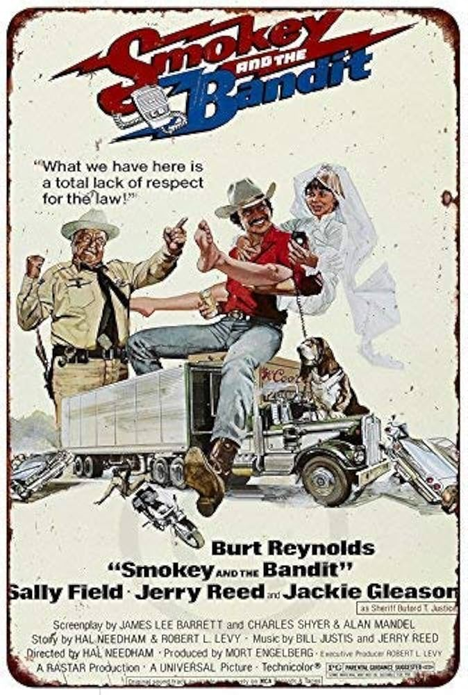

HOME
Smokey and the Bandit (1977)
Legendary truck drivers Bo "Bandit" Darville and Cledus "Snowman" Snow agree to a dare to illegally transport Coors beer from Texas to Georgia. Throughout their journey, they are chased by Sheriff Buford T Justice.
Company Credits: Universal Pictures
Release Date: May 27, 1977
Genres: Action, Comedy, Chase
Rating: PG
Running Time: 96 min
Beverly Hills Cop (1984)
Detroit Detective Axel Foley takes a trip to Beverly Hills to investigate the reasoning behind the murder of an old friend. However, he quickly realizes that the culture of Beverly Hills is different compared to Detroit.
width="160" />Company Credits: Paramount Pictures
Release Date: December 5, 1984
Genres: Action, Comedy, Crime
Rating: R
Running Time: 105 min